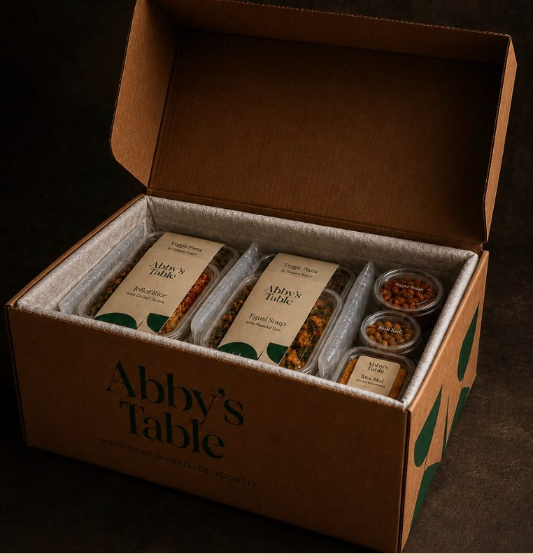

We’re confirming your payment{{ spinner }}
Please don’t close this page or refresh your browser. We’ll confirm your payment and show your order details shortly.
Your order is safe
We’ve received your order details and are confirming your payment with our secure payment provider.
